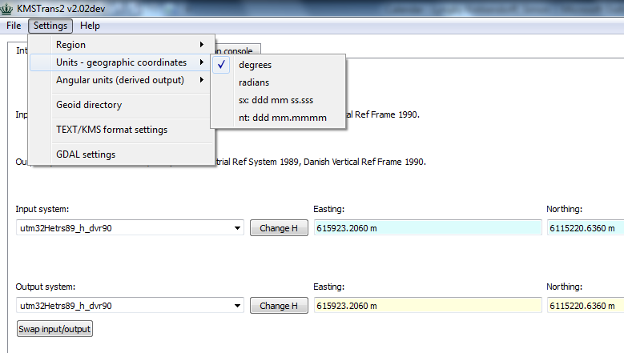
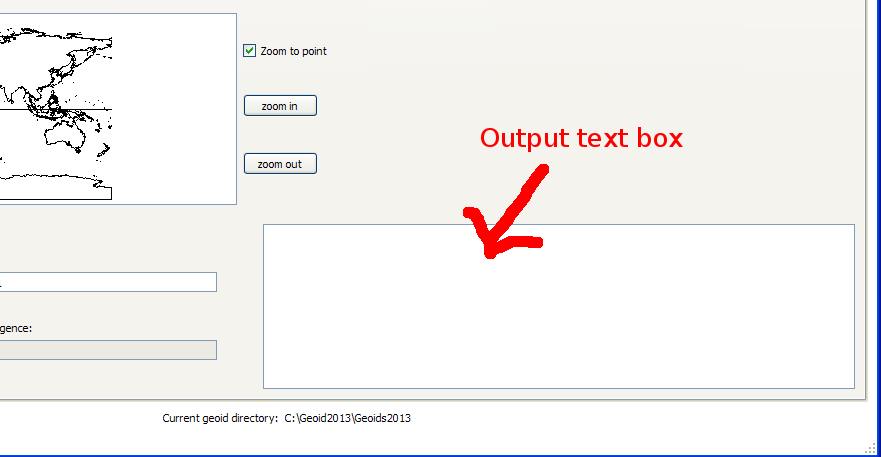

Interactive Tab
In the interactive tab you can perform transformation of single
points and view output like scale and meridian convergence of the
output system.
Spatial reference systems are specified as so called mini labels,
see a description of the syntax here.
You can either select predefined systems from the drop down lists or
type in mini labels yourself in the text fields. Hitting enter in
the input or output system fields triggers a new transformation.
Back to the main help page
Contents
Units
You can specify units at the end of coordinates, if you like.
Generally units are in meters (m), except for geographic systems
where angular input/output can be:
- degrees (dg).
- radians (rad).
- nautical units (nt), ddd mm.mmmm
- sexagesimal format (sx), ddd mm ss.ssss
You can specify the units to use for geographic coordinate systems
and derived angular output (like meridian convergence) in the
'Settings' menu item.

Triggering a
transformation
To trigger a new transformation, hit enter in either an input
coordinate field, input or output system fields or simply by
changing input or output system from the drop down list.
Changing the input system will not automatically trigger a
transformation of the coordinates in the input field (as it was
the case in the 'old' KMStrans).
Regions
Changing the region will only have an effect on the predefined
systems in the input and output system combo boxes - that is the
only effect. You will still be able to use any system you like by
typing in the combo box, e.g. a danish projection like dkmt1 when
using the 'World' region.
Message Box
Error messages and various extra information will appear in the
output box in the lower left corner of the window. For example if
a transformation produces an error or warning the output should
appear here.
